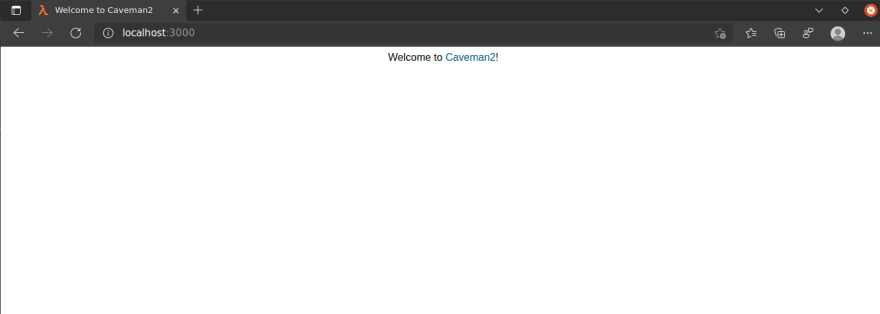
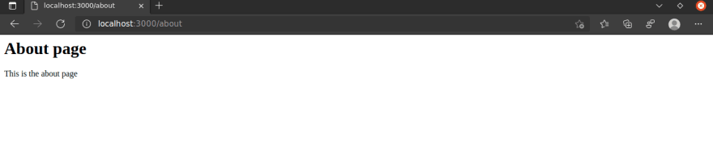
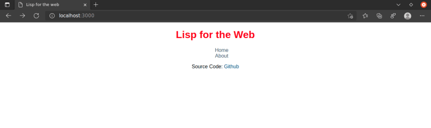

Rajasegar
Chandran
Posted on
Lisp для Web - 5
#commonlisp
#webdev #lisp
#caveman2
Lisp для web - 5
Это сообщение об использовании Common Lisp для веб-разработки.
Лисп - один из старейших языков программирования, который
используется до сих пор.
Его окрестили программируемым языком программирования
за его отличные характеристики по расширению. Он стал пионером многих идей
в области информатики, включая древовидные структуры данных,
автоматическое управление храненилищем данных, динамическую типизацию,
условные выражения, функции высшего порядка, рекурсию, компилятор с
собственным хостом(self-hosting compiler) и цикл чтения – оценки(вычисления)
– печати(REPL).
В прошлом было много замечательных сообщений об использовании Lisp для веб-разработки.
Это мой шанс перенести Lisp в ультрасовременный Интернет и особенно как развернуть
ваши веб-приложения Common Lisp в облаке.
Как Front-end разработчик, в этом посте я сосредоточусь в основном на следующих
аспектах веб-разработки.
Средства разраотки(Frameworks)
IDE & Инструменты
Настройка среды разработки
Развертывание
Это сообщение вводного уровня, которое познакомит вас с инструментами и практиками
разработки и развертывания ваших веб-приложений на Лиспе. Я планирую написать
более подробные статьи по каждому из инструментов и практик позже.
Предыдущие посты
Это самые популярные посты, посвященные данной теме до моего поста. Пожалуйста,
не стесняйтесь проверить их, если вы хотите получить больше информации о
веб-разработке с помощью Lisp.
Как мне начать?
Чтобы начать работу с Lisp для веб-разработки, вам потребуются две вещи.
Реализация Lisp, установленная на вашем компьютере, и редактор с возможностями
IDE для разработки веб-приложений с помощью lisp. Я использую SBCL в качестве
своей реализации Lisp и Emacs в качестве редактора. Вы можете выбрать любой
редактор для задачи, но ничто не может сравниться с Emacs в редактировании
кода Lisp. Это идеальный инструмент для работы.
SBCL
Steel Bank Common Lisp (SBCL) - это высокопроизводительный компилятор
Common Lisp. Это открытое / бесплатное программное обеспечение с
разрешающей лицензией. Помимо компилятора и системы времени выполнения
для ANSI Common Lisp, он предоставляет интерактивную среду, включая
отладчик, статистический профилировщик, инструмент покрытия кода и
многие другие расширения.
SBCL работает на нескольких платформах POSIX и экспериментально в Windows.
См. Страницу загрузки
для получения информации о поддерживаемых платформах и руководство по
началу работы для получения дополнительной помощи.
Установка SBCL в Ubuntu
sudo apt-get install sbcl
Installing SBCL on Mac using Homebrew
brew install sbcl
После того, как вы установили SBCL на свой компьютер, вы можете начать экспериментировать
с REPL, вызвав его из командной строки.
sbcl
Вы можете ввести любое выражение Lisp в REPL и сразу же получить результат.
CL-USER> (+ 1 2)
3
Quicklisp
После установки SBCL следующим шагом будет установка
Quicklisp.
Quicklisp - это менеджер библиотеки Common Lisp. Он работает
с вашей существующей реализацией Common Lisp для загрузки,
установки и загрузки любой из более чем 1500 библиотек с
помощью нескольких простых команд. Это похоже на npm для Node.js,
cargo для Rust и аналогично другим менеджерам пакетов для других
языковых реализаций. Перейдите на их домашнюю страницу и обратитесь
к инструкциям по установке, чтобы узнать, как установить и
настроить quicklisp для вашей реализации Lisp.
Emacs
Затем идет наш редактор - Emacs. Emacs -
это расширяемый, настраиваемый и бесплатный текстовый редактор, который по своей сути
является интерпретатором Emacs Lisp. По сути, это означает, что в него встроена
поддержка редактирования кода Lisp. Вы можете зайти на их веб-сайт и следовать
инструкциям по установке в различных операционных системах и платформах.
В Emacs также есть масса удивительных вещей, таких как org-mode,
встроенный файловый проводник под названием dired и так далее. Это операционная
система внутри себя.
SLIME
SLIME - это
режим Emacs для разработки Common Lisp. Это среда для хакинга(программирования)
Common Lisp. У него есть отладчик Common Lisp, REPL (Read-Eval-Print-Loop),
который написан на Emacs Lisp для более тесной интеграции с Emacs и
интерактивным инспектором объектов.
Так что это необходимый аддон для Emacs, если вы заинтересованы в
серьезном Lisp. После того, как вы установили Emacs, вы можете установить
slime с помощью M-x package-install, а затем
введите slime и нажмите Enter.
Вы также можете обратиться к инструкциям по быстрой настройке на их github README, чтобы быстро
настроить SLIME.
Вы можете запустить SLIME с помощью M-x slime,
то естьAlt или Meta
клавишь + x, а затем ввести slime и войти. Он
запустит программу Lisp по умолчанию, которую вы настроили ранее (в нашем случае - SBCL),
в самом Emacs. Вы можете поиграть в интерпретаторе так же, как вы делали это
раньше с SBCL.
Caveman
Когда вы будете готовы с настройкой IDE и необходимыми инструментами,
установленными на вашем компьютере, пора приступить к настоящей работе.
Создание проекта веб-приложения с помощью Lisp.
В старых сообщениях, о которых я упоминал выше, на самом деле не было
никаких фреймворков, используемых для настройки и разработки веб-приложений для Lisp.
Они были просто ручной работы, простые и понятные.
Но если вы хотите иметь масштабируемую и поддерживаемую базу кода для
своих веб-приложений, вам необходимо иметь какие-то соглашения о том,
как вы организуете свой код Lisp для создания веб-сайтов и приложений.
Используя такие фреймворки, как Ruby on Rails и Express.js, я, естественно,
склонен начинать наш проект с помощью фреймворка. Поскольку соглашения
делают вас продуктивным в долгосрочной перспективе, они избавляют вас
от принятия произвольных решений о том, как вы организуете свой код и
делаете свою кодовую базу поддерживаемой в будущем. .
Поэтому я выбрал Caveman
для этого проекта. После экспериментов с Caveman и без него для создания
веб-приложений на Common Lisp я обнаружил, что это лучший фреймворк
для разработки веб-приложений на Lisp. Caveman - это легкий фреймворк
для веб-приложений, созданный Eitaro
Fukamachi(Эйтаро Фукамачи) для Common lisp. У Фукамачи есть
несколько серьезных инструментов для веб-разработки на Lisp.
Не стесняйтесь проверять его профиль на Github для получения
дополнительных полезных инструментов.
Caveman доступен в Quicklisp, поэтому вы можете установить его с помощью
(ql:quickload :caveman2)
А вот как вы можете сгенерировать скелет проекта с помощью Caveman:
(caveman2:make-project #P"~/quicklisp/local-projects/hello-caveman" :author "Rajasegar")
Это создаст папку проекта в "~/quicklisp/local-projects", которая
является местом по умолчанию, откуда вы можете загружать свои проекты в Quicklisp.
Это означает, что вы можете загрузить наше недавно созданное приложение в quicklisp,
как показано ниже:
(ql:quickload :hello-caveman)
В вашем приложении есть функции с именами start и stop для запуска / остановки
вашего веб-приложения.
Итак, вы можете запустить веб-сервер разработки
следующим образом:
(hello-caveman:start :port 3000)
Откройте браузер и перейдите по адресу http://localhost:3000.
Вы получите пустую веб-страницу с надписью Welcome to
Caveman2.
(«Добро пожаловать в Caveman2».)

Добавление новых маршрутов
Вы можете добавить новые маршруты в свое веб-приложение, отредактировав
файл web.lisp, расположенный в папке
src вашего вновь созданного проекта.
Скажем, например, если вы хотите добавить новый маршрут, например
http://localhost:3000/about, в свое приложение,
вы можете определить новый маршрут под маршрутом по умолчанию, как
показано ниже.
(defroute "/about" ()
(render #P"about.html"))
src/web.lisp
(in-package :cl-user)
(defpackage super-rentals.web
(:use :cl
:caveman2
:super-rentals.config
:super-rentals.view
:super-rentals.db
:datafly
:sxql)
(:export :*web*))
(in-package :super-rentals.web)
;; for @route annotation
(syntax:use-syntax :annot)
;;
;; Application
(defclass <web> (<app>) ())
(defvar *web* (make-instance '<web>))
(clear-routing-rules *web*)
;;
;; Routing rules
(defroute "/" ()
(render #P"index.html"))
(defroute "/about" ()
(render #P"about.html"))
;;
;; Error pages
(defmethod on-exception ((app <web>) (code (eql 404)))
(declare (ignore app))
(merge-pathnames #P"_errors/404.html"
*template-directory*))
Добавление нового шаблона для вашего маршрута
Вы можете создавать новые шаблоны для своих маршрутов в папке
templates(шаблонов), расположенной в
корне вашего проекта. Просто создайте новый файл about.html
и немного HTML к нему.
Djula Шаблоны(Templates)
Хороший фреймворк обеспечивает надежную поддержку шаблонов в ваших веб-приложениях.
Потому что это помогает вам выразить вашу разметку с помощью динамической информации
с сервера.
Caveman использует для работы шаблоны Djula.
Djula - это порт шаблонизатора Python Django на Common Lisp.
Язык шаблонов Djula разработан для достижения баланса между мощностью и легкостью.
Он разработан для тех, кто привык работать с HTML.
<h1>About page</h1>
<p>This is the about page</p>
Теперь перейдите в файл web.lisp, перезагрузите изменения,
чтобы новые маршруты вступили в силу. В Emacs вы можете просто выполнить
C-c C-l, то есть сначала нажать Ctrl-c,
а затем Ctrl-l, чтобы скомпилировать ваш файл и загрузить
его в среду SLIME. Затем перейдите в свой браузер и перейдите по
http://localhost:3000/about, чтобы просмотреть новую страницу.
Прелесть использования такого фреймворка, как Caveman, заключается в том, что
любые изменения, которые вы вносите в свои шаблоны, файлы HTML, будут автоматически
отражаться в браузере. Все, что вам нужно сделать, это просто обновить страницу.

Добавление стиля
В папке static/css в корне вашего проекта есть
файл css по умолчанию с именем main.css. Вы можете
добавить любые настраиваемые свойства и объявления CSS для стилизации ваших
веб-страниц.
/* static/css/main.css */
h1 {
color: red;
}
В приведенном выше коде все ваши теги h1 будут
иметь текст красного цвета. Теперь, когда мы наигрались достаточно, чтобы
понять структуру нашего проекта и разработали очень простое веб-приложение,
пришло время развернуть наше приложение в облаке, чтобы мы могли поделиться
им с другими.
Какой смысл в создании крутого веб-приложения, если вы не можете
поделиться им с внешним миром и получить обратную связь. Это один из
важных аспектов, который не рассматривался в предыдущих статьях о
Common Lisp и веб-разработке.
Измените свою домашнюю страницу, включив в нее ссылки на
about и home страницы. Для этого вам необходимо внести следующие
изменения в файл templates/index.html.
Это шаблон домашней страницы для нашего приложения.
{% extends "layouts/default.html" %}
{% block title %}Lisp for the web{% endblock %}
{% block content %}
<div id="main">
<h1>Lisp for the Web</h1>
<nav>
<ul>
<li><a href="/">Home</a></li>
<li><a href="/about">About</a></li>
</ul>
</nav>
<p>Source Code: <a href="https://github.com/rajasegar/lisp-for-the-web">Github</a></p>
</div>
{% endblock %}

Развертывание
Теперь мы увидим, как развернуть наше веб-приложение Common Lisp в облаке.
Я использую для этого Heroku. Heroku - мощный
поставщик PaaS (Platform as a Service/платформа как услуга), который имеет массу
функций для создания и развертывания веб-приложений. У него есть отличный инструмент
CLI, с помощью которого вы можете развернуть свои приложения за считанные минуты,
вы можете просматривать журналы из командной строки, использовать пользовательские
пакеты сборки и многое другое. Я использую Heroku уже десять лет, и у меня есть много демо,
созданных с его помощью. Итак, для нашего приложения мы будем использовать то же самое.
Сначала нам нужно, чтобы на нашем компьютере был установлен инструмент heroku CLI.
Вы можете посетить официальную страницу heroku-cli для получения инструкций по установке на различных платформах.
После установки интерфейса командной строки heroku для создания нового приложения все,
что вам нужно сделать, это просто запустить эту команду из папки проекта.
heroku apps:create my-awesome-app
Но для нашего приложения на Лиспе этого недостаточно, потому что у нас
нет встроенной поддержки языка Лисп на платформе Heroku, поэтому мы
собираемся использовать так называемые пакеты сборки.
Heroku пакеты сборки(Buildpacks)
Пакеты сборки(Buildpacks) -
это сценарии, которые мощное приложение строит на Heroku. Они состоят из набора сценариев,
и в зависимости от языка программирования сценарии будут извлекать зависимости,
выводить сгенерированные ресурсы или скомпилированный код и т. Д.
Этот вывод собирается в slug компилятором slug. Поддержка Heroku для
Ruby, Python, Java, Clojure, Node.js, Scala, Go и PHP реализована с помощью
набора пакетов сборки с открытым исходным кодом.
Heroku поддерживает коллекцию официально поддерживаемых пакетов сборки,
которые по умолчанию доступны для всех приложений Heroku.
Итак, чтобы наше веб-приложение Common Lisp было правильно развернуто
в Heroku, нам нужен специальный пакет сборки. К счастью, существует так
много пакетов сборки Common Lisp, созданных замечательными людьми для
развертывания веб-приложений Lisp на платформе Heroku. Мы собираемся
использовать один из них под названием heroku-buildpack-roswell,
созданный gos-k. Итак, как мы собираемся
использовать этот buildpack. Нам нужно передать флаг --buildpack
с URL-адресом buildpack нашей команде heroku следующим образом.
heroku apps:create my-awesome-app --buildpack https://github.com/gos-k/heroku-buildpack-roswell
Это говорит Heroku использовать специальный пакет сборки для создания наших
веб-приложений Common Lisp и их развертывания. Но перед созданием приложения
нам нужно выполнить некоторые настройки в нашем проекте, чтобы пакет сборки
работал. Сборка основана на roswell.
roswell
Roswell - это установщик реализации Lisp/менеджер, программа запуска
и многое другое. Он начинался как инструмент командной строки с целью
сделать установку и управление реализациями Common Lisp действительно
простой и легкой. Теперь он превратился в среду с полным стеком для
разработки Common Lisp и имеет множество функций, которые упрощают
тестирование, совместное использование и распространение ваших приложений Lisp.
С Roswell мы можем вывести сообщество Common Lisp на совершенно
новый уровень продуктивности.
Итак, чтобы наш пользовательский пакет сборки работал, нам нужно
создать четыре новых файла в корне проекта.
.roswell-install-list
Этот файл сообщает roswell об установке этих пакетов в качестве
зависимостей для вашего приложения.
clack
.roswell-use
Этот файл сообщает roswell использовать двоичный файл sbcl по умолчанию
для наших приложений.
sbcl-bin
.roswell-load-system-list
Этот файл указывает roswell загружать эти системы как часть
зависимостей нашего проекта.
clack
Procfile
Этот файл сообщает Heroku команде запуска запустить наш веб-сервер с
помощью команды clackup из Clack.
web: clackup --port $PORT --address 0.0.0.0 app.lisp
Clack - это уровень абстракции
веб-сервера для Common Lisp, вдохновленный WSGI Python и Rack Ruby.
Clack предоставляет сценарий для запуска веб-сервера. Это полезно при развертывании
в производственной среде.
Мы предоставляем флаг --port, чтобы
использовать переменную env PORT, назначенную
Heroku для вашего проекта, и флаг --address,
чтобы использовать адрес 0.0.0.0 вместо
localhost. Этот флаг очень важен, иначе
ваше приложение выдаст ошибку запуска, сообщающую, что приложение не
привязано к порту в течение указанного тайм-аута. И, наконец, мы
предоставляем наш основной файл app.lisp
для clack.
После создания всех этих файлов нам все еще нужно сделать одно
последнее изменение в нашем коде, чтобы пакет сборки заработал.
Это означает, что система /app должна
выбрать определение системы проекта из папки /app
в Heroku после завершения сборки и готовности проекта к загрузке.
Мы добавим эту строку вверху в нашем файле app.lisp
в корне папки проекта.
Что такое asdf?
ASDF расшифровывается как Another System Definition Facility(Другая
возможность определения системы). Это то, что хакеры Common Lisp используют
для создания и загрузки программного обеспечения.
ASDF - это де-факто стандартное средство сборки Common Lisp. Ваша реализация
Lisp, вероятно, содержит копию ASDF, которую вы можете загрузить с помощью
(require "asdf").
Это инструмент для описания того, как исходный код Lisp организован
в системах, а также как создавать и загружать эти системы. Каждый проект
Lisp имеет файл определения системы, который заканчивается расширением
.asd, в котором вы можете указать некоторые
сведения о своем проекте. Это похоже на файл манифеста проекта, похожий на
package.json для Node.js и
cargo.toml для Rust.
;; app.lisp
(push #p"/app/" asdf:*central-registry*)
После того, как вы добавите все вышеперечисленные изменения, зафиксируйте их
и отправьте в ветку heroku, и ваше приложение будет автоматически создано и
развернуто с новым пакетом сборки.
git push heroku master
Вот и все, вы готовы просмотреть свое веб-приложение в действии по URL-адресу
https://lisp-for-the-web.herokuapp.com. Исходный код этого сообщения размещен на Github.
Надеюсь, вам понравился этот пост, и вы узнали, как создавать
веб-приложения на Common Lisp и как развертывать их на облачной платформе,
такой как Heroku.
Пожалуйста, оставляйте свои отзывы / вопросы в разделе комментариев,
будем рады ответить и помочь.
Вот некоторые из других демонстраций, которые я построил с
помощью Common Lisp:
{kind=link}
{kind=link}
{kind=link}